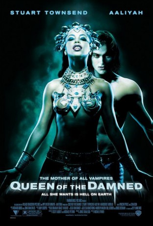
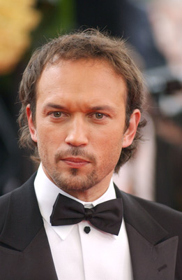
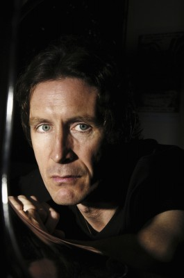
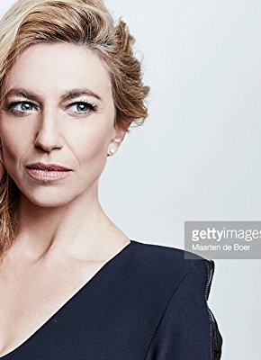
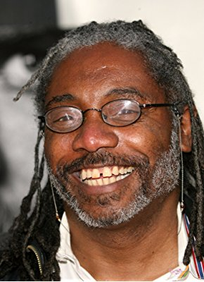

#8743 Königin der Verdammten
Alternativ: Queen of the Damned
 
 IMDB-Wertung: 5.3 / 10
IMDB-Wertung: 5.3 / 10  Metascore: 0
Metascore: 0 
After many years of sleeping in his coffin, the vampire Lestat awakens only to find that the world has changed and he wants to be a part of it. He gathers a following and becomes a rock star only to find that his music awakens the ancient Queen Akasha and she wants him to become her king...
Jahr: 2002
Dauer: 101 Minuten
FSK: 16
Land: USA Studio: Warner Bros.Tonspuren: DD5.1 - ,
Untertitel:
Auflösung: 1080p (1920x800) Größe: 4945 MB
Genre: Horror, Drama, Fantasy
Regisseur: Michael Rymer
Drehbuch: Anne Rice
Soundtrack: Jonathan Davis, Richard Gibbs
Darsteller:
- Aaliyah als Queen Akasha
 Stuart Townsend als Lestat
Stuart Townsend als Lestat Marguerite Moreau als Jesse
Marguerite Moreau als Jesse-  Vincent Perez als Marius
-  Paul McGann als David Talbot
 Lena Olin als Maharet
Lena Olin als Maharet-  Claudia Black als Pandora
 Bruce Spence als Khayman
Bruce Spence als Khayman- Matthew Newton als Armand
- Tiriel Mora als Roger
- Robert Farnham als Alex
 Christopher Kirby als New York Vampire
Christopher Kirby als New York Vampire- MiG Ayesa als New York Vampire
- Pip Mushin als Guy Being Sucked
- Tayler Kane als Club Vampire
- Imogen Annesley als Club Vampire
- Aimee Nash als Vampire Singer
- Nicole Fantl als London Groupie
- Alyssa McClelland als London Groupie
- Andrew L. Urban als Himself
- Dino Marnika als Music Journalist
- Arroyn Lloyd als VW Passenger
-  Franklyn Ajaye als French Dealer
- Mark O'Halloran als Rent Boy
- Anni Finsterer als Euro Trash Vampire
- Alistair Reid als Euro Trash Vampire
- Enrico Mammarella als Greek Fisherman
- Serena Altschul als Herself
- Jonathan Davis als Scalper
- Alana de Freitas als Goth Concert-Goer (uncredited)
- Danielle Eskinazi als Girl on couch (uncredited)
- Nathan Hill als Attacking Vampire (uncredited)
- Brendan Parry Kaufmann als Concert Goer (uncredited)
- Anita Marelic als Goth Girl (uncredited)
- Laneth Sffarlenn als Concert attendee (uncredited)
- Christian Manon als Mael
- Megan Cooper als Maudy
- Johnathan Devoy als James
- Conrad Standish als T. C.
- Richael Tanner als Young Jesse
- Joe Manning als New York Vampire
- Kat Rhodes als Vampire Girl
- Chris Connelly als Mortal Yuppie
- Renee De Bondt als Vampire Girl Sucking
- Renee Quast als Vampire Girl Sucking
- Dan Zizys als Vampire Doorman
- Daniel Schlusser als Club Vampire
- Rowland S. Howard als Vampire Guitarist
- Hugo Race als Vampire Bass Player
- Robin Casinader als Vampire Pianist
Datei: X:\2002\Königin der Verdammten (2002, FSK16, 1920x800).mkv seit 26.04.2018
Festplatte: HD 1996-2002
 Es gibt insgesamt 93 Filme in der Gruppe '2002'
Es gibt insgesamt 93 Filme in der Gruppe '2002'